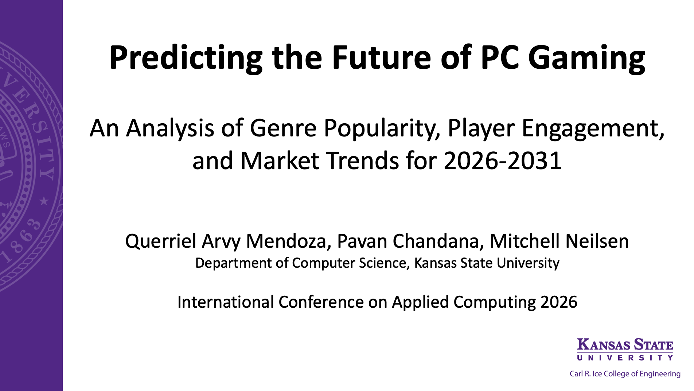

Projects & Experience
Open-source projects can be viewed on GitHub.
Projects
[ON-GOING] FogAg: A Novel Fog-Assisted Smart Agriculture Framework for Multi-Layer Sensing and Real-Time Analytics of Water-Nitrogen Colimitations in Field Crops
This research project aims to fill the gaps in contemporary smart agriculture (SmartAg) technologies by proposing a fog-assisted framework, FogAg, that integrates multi-layer sensing and real-time analytics of a plant-soil system to help solve the complex biological puzzle of linking the effect and interaction of two important crop inputs, viz., water and nitrogen, affecting crop yield. FogAg will also help provide near-real time diagnosis of crop stresses and translate the data into usable agronomic decisions not only to boost crop productivity but also to increase overall yield per unit of resource used in farming systems.
[ON-GOING] Multi-Axis Seed Imaging with Micro-ROS: A SysML v2 Model-Based Architecture Approach
Targeted key Improvements with Micro-ROS:
- Complete 3D coverage
- Multi-axis rotation eliminates blind spots
- Real-time coordination
- Synchronized motor-camera control via ROS 2
- Modular architecture
- Easy integration of new sensors and algorithms
- Expected accuracy improvement <2% error (vs 3% baseline)
🎮 Predicting the Future of PC Gaming: An Analysis of Genre Popularity, Player Engagement, and Market Trends for 2026–2031
- Analyzed 87,835 games from the Steam platform (2010–2025) using linear regression to forecast genre trends through 2031.
- Identified Action, Casual, Adventure, Indie, and Simulation as the top five "hot" genres with growth rates of 32.6%–35.3%.
- Casual gaming emerged as the fastest-growing segment at 35.3% projected growth.
- Free-to-Play titles average 892,400 owners per game despite representing only 1.8% of total releases.
Accepted at the 2026 International Conference on Applied Computing (CAC 2026).
🐛 Insect Detection System
A real-time insect detection and classification system built with deep learning (CNN) and deployed on an NVIDIA Jetson Nano with a camera module. The system identifies stored-product insect pests — including warehouse beetles and cigarette beetles — under varying lighting conditions. Published in MDPI AI and presented at SPIE Defense + Commercial Sensing 2023.
🌾 Crop Recommendation System
A proof-of-concept machine learning project that advises on the ideal crops to plant, the right fertilizers to employ, and detects diseases that might affect crops. Uses environmental and soil data to provide data-driven agricultural recommendations.
Conference Presentations
International Conference on Applied Computing (CAC 2026)
Presenting "Predicting the Future of PC Gaming: An Analysis of Genre Popularity, Player Engagement, and Market Trends for 2026–2031" at the 2026 International Conference on Applied Computing: Bridging Theory, Innovation, and Real-World Impact (CAC 2026).
